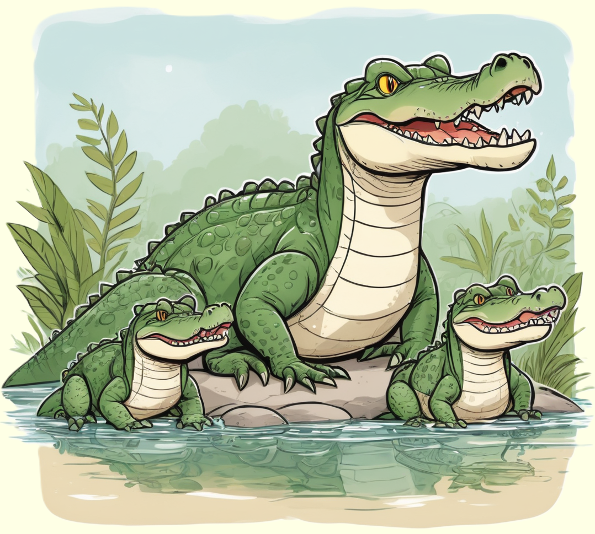

"Krokodile, furchterregende Jäger der Wasserwelt, beeindrucken mit ihren scharfen Zähnen und ihrer angepassten Lebensweise.
Erfahre mehr über diese faszinierenden Reptilien und ihre Rolle in den spannenden Ökosystemen der Flüsse und Seen."

Geheimnisvolle Bewohner der Flüsse
Krokodile sind faszinierende Reptilien, die in den Gewässern der Tropen und Subtropen zu Hause sind. Mit ihren scharfen Zähnen, kräftigen Kiefern und schuppigen Körpern sind sie beeindruckende Jäger. Krokodile sind für ihre besondere Anpassung an das Leben im Wasser bekannt, und sie können sich sowohl im Süß- als auch im Salzwasser bewegen.
Diese geschickten Jäger lauern oft im Wasser, nur mit den Augen und Nasenlöchern über der Oberfläche. Sobald Beute in ihre Reichweite gerät, schnellen sie blitzschnell vor und schnappen zu. Krokodile können sowohl unter Wasser als auch an Land überraschend schnell sein, was sie zu beeindruckenden Raubtieren macht.
Meister der Tarnung und Langstreckenschwimmer
Krokodile sind nicht nur starke Jäger, sondern auch geschickte Überlebenskünstler. Sie haben eine bemerkenswerte Tarnung, die es ihnen ermöglicht, sich im Wasser oder zwischen Pflanzen zu verstecken, während sie auf Beute lauern. Außerdem sind Krokodile erstaunliche Schwimmer und können weite Strecken zurücklegen, um neue Gebiete zu erkunden oder sich auf Nahrungssuche zu begeben.
Ein interessanter Fakt ist, dass Krokodile ihre Körpertemperatur durch Sonnenbaden regulieren können. Sie lieben es, sich an sonnigen Ufern aufzuwärmen. Diese klugen Strategien machen die Krokodile zu faszinierenden Geschöpfen.